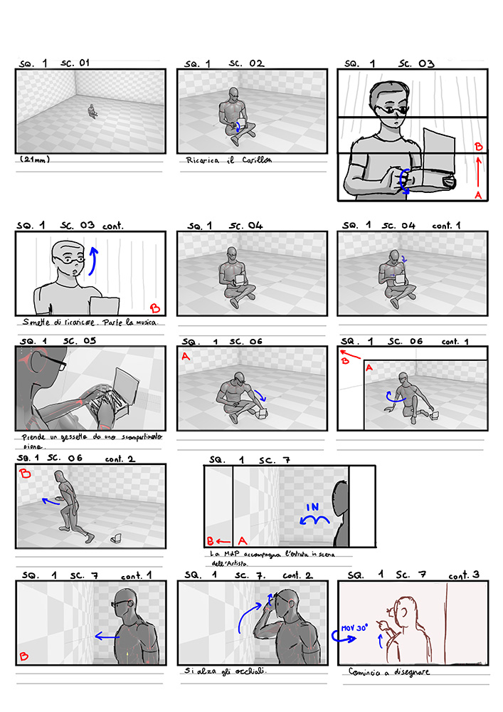
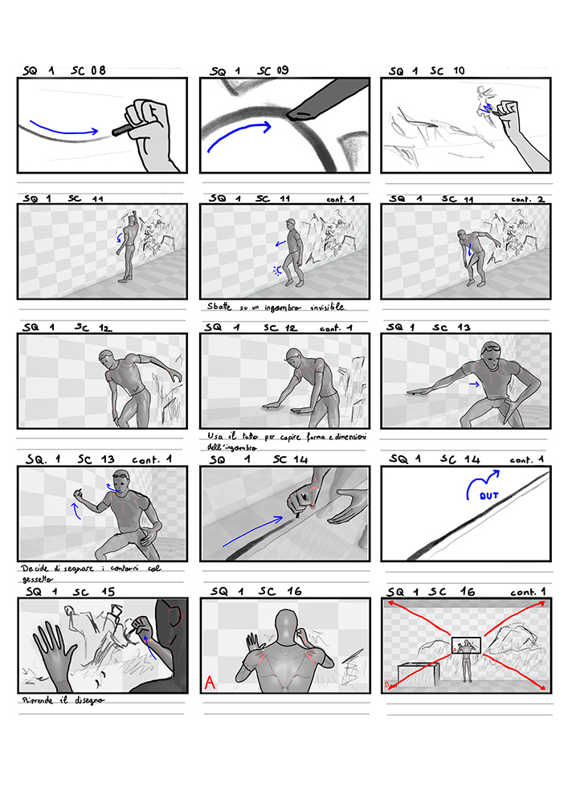
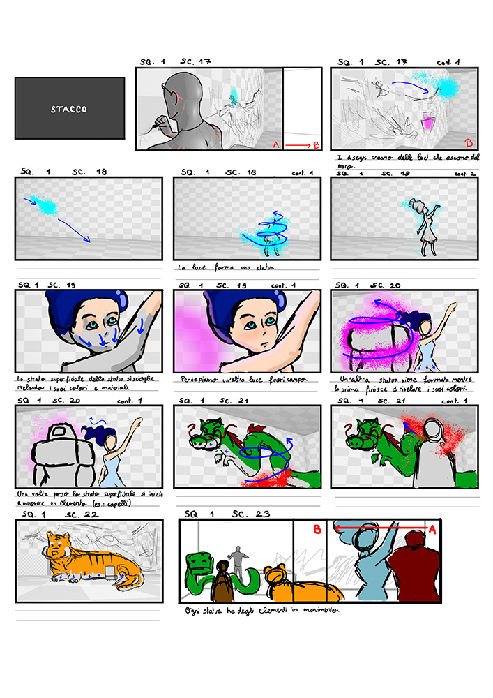
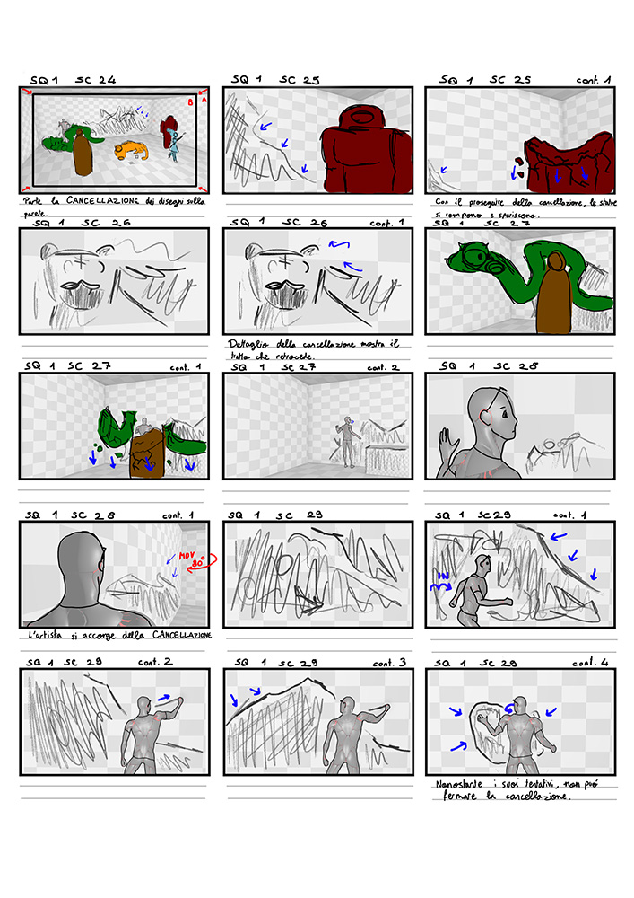
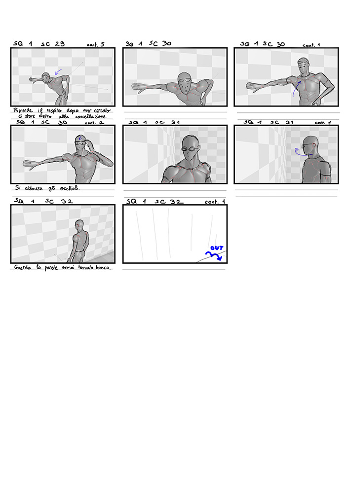
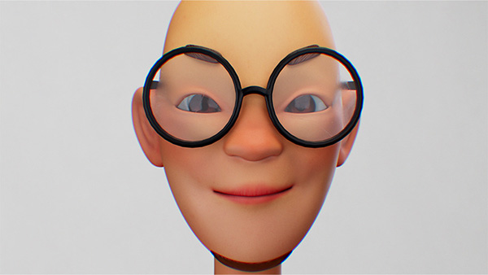

Victor D'Anzi
Artifex is a short film commissioned by and screened at the 2023 View Conference. I worked on it while at the European Institute of Design (IED), in Rome.
The film's theme was Artificial Intelligence and whether it could ever replace the work of artists. Will the main character manage to face the challenges that are blocking his creativity?
In the production of this short film, I took on the following tasks:
Given the topic of Artificial Intelligence (AI), my colleagues and I decided to write about whether AI would ever be able to create original art to the extent that a human artist can. Unable to predict the future, what I chose to do was to allow the audience to think for themselves, and come up with their own conclusions. I decided that, in order to keep the audience wondering, even after the end of the short film, I wanted to have a question that would catch their curiosity, followed by an unexpected final revelation. In the case of Artifex, the main character, an artist, tries to draw, but a mysterious force keeps on erasing his drawings. Only at the end, does the artist and the audience find out that the film was, actually, all happening inside of a computer, and that the mysterious force was a computational error.
The twist, however, could not come out of nowhere. I have studied beloved pieces of media that use a similar technique and I realized that, in order to be successful, there needs to be recurring elements that guide the audience through the story and its themes (in Artifex the music box symbolizes the artist's humanity, which contrasts with the technology of the computer, and the chalks symbolize the gradual defeat in front of the artist's inevitable death), as well as a certain care for details, that allow the viewer to have lots of 'additional story' to uncover within the shots. This will all be followed by the unveiling of the mystery (in Artifex, that would be the glitch of the system, followed by the main character’s investigations) that will feel logical and like it was built upon a strong basis of ideas explored throughout the film.





Beginning panels, made by Victor D'Anzi, of the storyboard for Artifex with a first version of the shots and the original Italian descriptions.
Progression Reel of Shots 2-6 of Artifex from Previs to final render, animated by Victor D'Anzi.
Other than working on the Previs and doing the Character Animation of most of the short film in just over 2 months, I was responsible for preparing the poses and loops that the animation help would start from. This allowed everyone to animate much faster
In the Compositing phase, I was responsible for polishing the shots by putting together the render layers, adding motion blur, depth of field, and glows where needed, and finally putting noise and chromatic aberration over each shot. While the last one is, normally, a barely noticeable camera defect, for the purpose of this film, I dialed it up slightly, so that it could visually hint at the virtual nature of the world. The same is, of course, not true for the few shots that happen outside the computer.
In many shots in which we see the computer from outside, I was also responsible for the screen replacement and, at times, the camera movement entirely, when there was not enough time to render the entire sequence.

Still from the short film Artifex shows the strong chromatic aberration added in Compositing.
As Pipeline TD, I was responsible for the optimization of the pipeline. I made decisions regarding what to do in each software. For instance, the drawings on the walls were added in comp, using NukeX by Foundry. This allowed our illustrators to keep working on them until the last minute, and to easily sync their disappearance with the character animation. For the incision on the wall, on the other hand, the effect had to be more tridimensional so it was more beneficial to create a texture in displacement.
I also studied the render layer set-up we would use and made sure that they were correctly set up. This saved us a lot of render time and allowed for quick corrections.
Overall, during the entire production, I had to do lots of problem solving in order to make sure that the production would go smoothly and that the final product would be as good as possible.